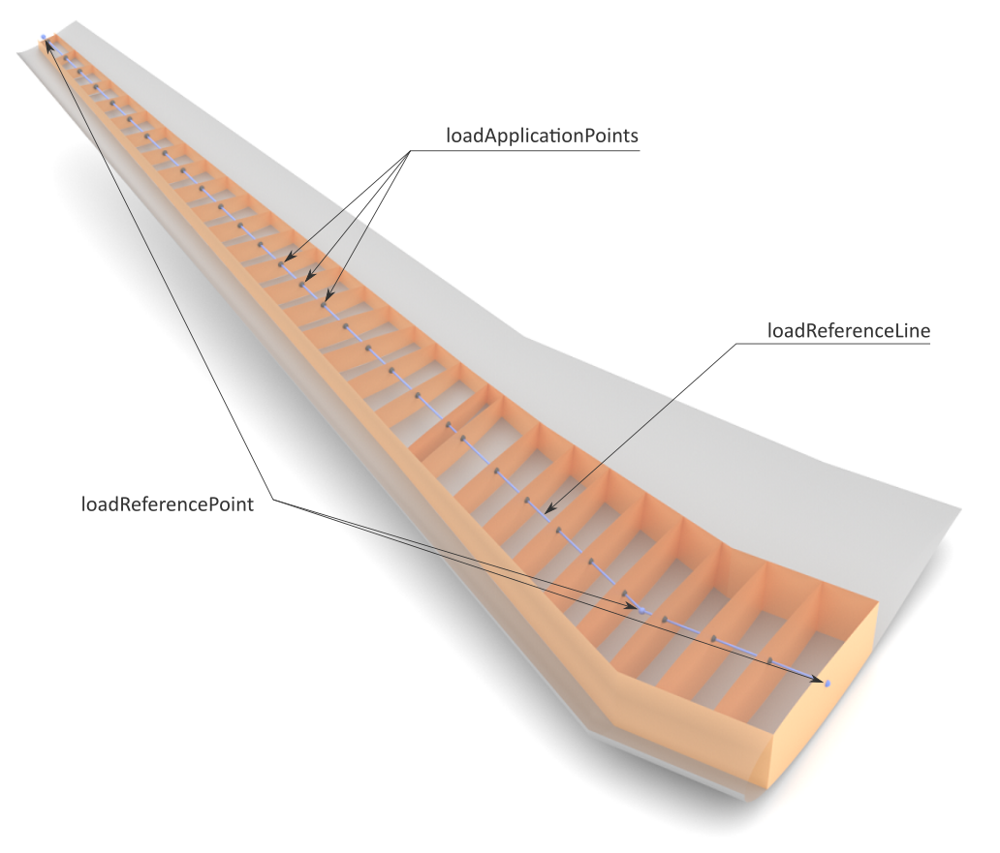

complexType · extension complexBaseType · all
Load application point set
A point set contains discrete spatial points at which loads are applied (e.g., aerodynamic or structural loads). A typical procedure in CPACS is as follows:

| Name | Type | Constraints | Use | Default | Description |
|---|---|---|---|---|---|
@externalDataDirectory | xsd:string | optional | Directory of the external data file | ||
@externalDataNodePath | xsd:string | optional | Path of the node inside the external data file | ||
@externalFileName | xsd:string | optional | Name of the external data file | ||
@uID | xsd:ID | required | UID |
| Name | Type | Constraints | OccurrenceHow often the element may appear at this place. The schema writes it as minOccurs and maxOccurs on the declaration. | Default | Description |
|---|---|---|---|---|---|
| allThe children below may appear in any order. Each may appear at most once. | |||||
componentUID | stringUIDBaseType | [1..1] required | UID of a wing, fuselage or control surface | ||
loadReferenceLine | loadReferenceLineType | [0..1] optional | Reference axis (line) for load distribution | ||
loadApplicationPoints | loadApplicationPointsType | [0..1] optional | List of points at which load vectors are applied to | ||
cutLoadIntegrationPoints | cutLoadPointsType | [0..1] optional | List of points at which cut loads are applied to | ||
connectivities | connectivitiesType | [0..1] optional | Connectivity properties between points | ||
| Type | Name |
|---|---|
loadApplicationPointSetsType | loadApplicationPointSet |